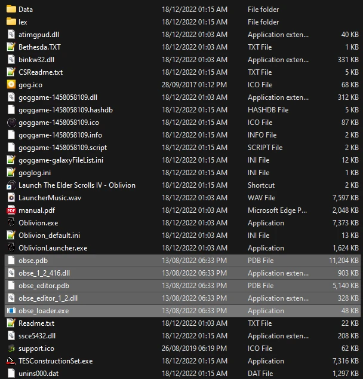

Utilities
Make sure the Glory of Cyrodiil profile is active before proceeding.
Creating a Separator in MO2
- Right-click the empty space in the left pane of MO2 and select Create Separator.
- Name the separator Utilities.
xOBSE
Installation instructions:
- Main Files - Oblivion Script Extender (xOBSE) (Manual Download)
- From the downloaded archive, extract everything to the game's Root folder
If you do not know what the Root folder is, read the Key Terminology section from the Initial Setup page.
obse_steam_loader.dll is needed only with the Steam version of the game.
An updated version of the original OBSE, which extends the scripting capabilities of the game.
After proper install, your Root Folder should look like this:

Oblivion BSA Decompressor
Installation instructions:
- Download the Main Files - Oblivion BSA Decompressor and extract the contents of the archive anywhere outside of the default Windows folders
- From the extracted archive, run Oblivion BSA Decompressor.exe
- If the game path isn't already there, enter it
- Click Decompress, wait for the process the finish, then exit the program once finished
Decompresses BSA files to reduce loading times and stuttering.
4GB Patcher
This is required only for Steam users! The 4GB Patch is included with the GOG release.
Installation instructions:
- Download the Main Files - 4gb_Patch_plus_Ram_optimization_readme
- From the downloaded archive, extract the .exe file to the game's Root folder
- Right-click on 4gb patch.exe and select Run as administrator
- Select Oblivion.exe and confirm
Makes the game large address aware, meaning it can use 4GB of RAM instead of 2GB.
OBL Mod Limit Fix
Installation instructions:
- Main Files - OBLModLimitFix
Increases the maximum amount of file handles the game can open.
After installing a mod, make sure you check the box next to it in the left pane of MO2 to enable it.
SkyBSA
Installation instructions:
Forces Oblivion to handle BSAs and loose files the same way that Skyrim does.
Oblivion Display Tweaks
Installation instructions:
- Main Files - Oblivion Display Tweaks
Micro stutter tick fix, high framerate fix, true FOV fix, alt-tab freeze fix in fullscreen and VRR working in borderless/windowed mode.
Crash Logger
Installation instructions:
- Main Files - Crash Logger
A DLL that logs raw crash data.
Oblivion Reloaded Combined
Installation instructions:
- Main Files - ORC180
- Additionally install the ORC Custom Configuration (install manually in mo2)
The custom onfiguration disables ORC's FPS management among other things, this means that you will need to limit your FPS externally with either your drivers or a tool such as Riva Tuner. Cap to 60 if you are unsure of the best value for your setup.
Fixes shaders and adds missing optimizations to the game engine, also improves visuals.
Simple Saves Plus
Installation instructions:
- Main Files - Simple Saves Plus
A lightweight mod that automatically creates saves at customisable intervals and when you level up. Replaces the buggy vanilla autosave system.